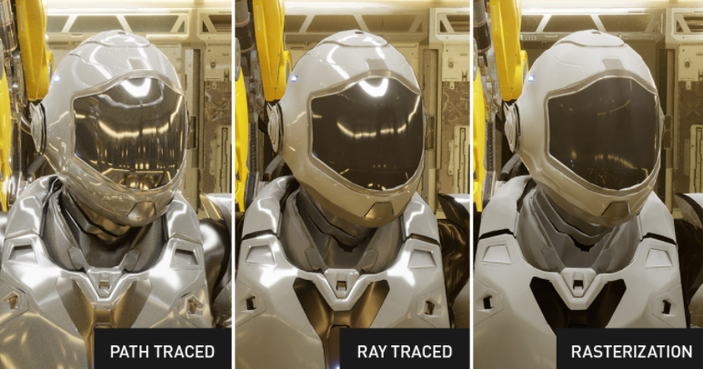

Path tracing
El path tracing es una técnica de renderizado utilizada en gráficos por computadora para simular cómo la luz interactúa con los objetos en una escena tridimensional y cómo se refleja y refracta en superficies para crear imágenes fotorrealistas. Es una técnica popular en la generación de imágenes en campos como el diseño de videojuegos, la animación y la producción cinematográfica.
En esencia, el path tracing simula el comportamiento de la luz al trazar rayos de luz desde la cámara hacia la escena, y luego sigue su camino a medida que interactúan con los objetos y las superficies de la escena. Cada rayo de luz puede rebotar, reflejarse o refractarse en función de las propiedades de las superficies con las que interactúa. Al trazar múltiples rayos de luz y seguir sus trayectorias, el path tracing calcula cómo la luz viaja a través de la escena, se refleja en las superficies y llega finalmente a la cámara, generando una imagen realista.
Sin embargo, el path tracing es computacionalmente intensivo ya que implica trazar un gran número de rayos de luz y realizar cálculos precisos para simular los efectos de reflexión, refracción, sombras suaves, y otros fenómenos de la luz. A lo largo de los años, se han desarrollado variantes y técnicas de mejora para acelerar el proceso de path tracing y hacerlo más eficiente en términos de tiempo de renderizado.